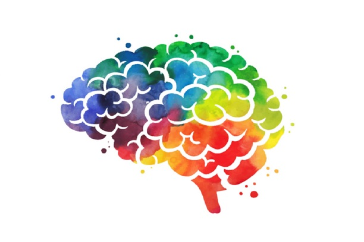

2022 Conference Schedule
The topics covered in this mini-conference are:
- Reincarnation & Embryogenesis
- The concept of Subtle-body
- Developing a theory of matter, mind and consciousness
- Prioritizing projects defined at the Mind-Brain Interface conference
- Outreach at top-tier universities
- Developing research collaborations between various universities
- Generating resources for the execution of projects
Day 1: Saturday (27th August) 8:30AM-1:30PM EST:
-
Introduction Session (45 minutes round table) (Chair: Tomas Chapa)
- Goal: Get to know everyone and their interests
-
Initiatives at IIT Mandi (20+10 minutes)
- Prof. Laxmidhar Behera (Director, IIT Mandi)
-
Reincarnation and Embryogenesis (10+2 minute talks followed by 30 min discussion = 2 hours)
(Chair Prem Kishor)
- Dr. Kunal Mooley (Caltech) — Reincarnation overview
- Prof. Nitika Parmar (CSUCI) / Dr. Chahat Upreti (UT Dallas) — Relevant topics from
Embryogenesis
- Prem Kishor Das (ISS) — India case studies plan
- Jack Dodson (Temple U.) — Towards a theory for reincarnation
- Dr. Ashish Gupta (IITK) — A reincarnation-type case within ISKCON
- Dr. Mayank Bhasin (IITKgp/U Melbourne) — Machine learning approaches on the DOPS
reincarnation
database
- Dr. Neha Satam (Inspire) — Hypnotic regression
- Dr. Swati Kulkarni — Reincarnation and Embryogenesis in Ayurveda
- Discussion: Timeline and resources. Collaborations with Dr. Pasricha and Dr. Tucker.
Planning a workshop at IIT Mandi in early 2023.
- Outreach (10+2 minute talks followed by 30 minute discussion = 1.5 hours) (Chair Akhandadhi Das)
- TBC Radheshyam Das (VOICE/NVCC Pune) — BYS concept at US universities
- Dr. Kunal Mooley (Caltech) — MBI conference proceedings, small books, involvement of other
academics in research projects
- Akhandadhi Das (SPi/BIHS) — Atma Paradigm / Consciousness-based resources
- Prem Kishor Das (ISS) — ISS outreach model and IKS accreditation
- Dr. Mayank Bhasin (IITKgp/U Melbourne) — Engaging university students with virtual
science-philosophy-based programs
- Discussion: Mind and Consciousness as common ground between modern science and Gaudiya
Vaishnava philosophy. Generating resources for outreach at top-tier universities.
Requirement and timeline.
- Day 1 Wrap up
- Summary of important points (Kunal)
Day 2: Sunday (28th August) 8:30AM-1:30PM EST:
- Theory and Subtle body (10+2 minute talks followed by 30 min discussion = 2.5 hours) (Chair
Kunal)
- Prof. Bhupal Dev (UWStl) — Building blocks of the Physical Universe
- Akhandadhi Das (SPi/BIHS) — Theory emerging from the Atma Paradigm (+5 minutes)
- Dr. Jyotiranjan Beuria (IIT Mandi, ISS) — Semantic Space to address the Mind-Body
conundrum
- Dr. Venkatesh Chembrolu (Amazon Labs) — Concept Space
- TBC Dr. Douglas Watson — Akash and subtle information
- Jack Dodson (Temple U.) — A mathematical approach for the genesis of Sankhya
elements
- Prof. Edwin Bryant (Rutgers) / Kunal Mooley (Caltech) — Metaphysical logic of Yogic
Siddhis
- Dr. Murli Gopal Das (UF) — Subtle body descriptions in the Eastern texts
- Dr. Stuart Hameroff (U. Arizona) — Quantum mind-brain connection
- Discussion: Plan of action to make progress on these projects. Timeline and resources.
Collaborations necessary. Planning for a dedicated workshop in the near future.
-
Other top-rated projects (Overview talk by Kunal/Tomas 15 minutes + 15 minute discussion = 30
min)
- Anesthesia & Vegetative State, Phantom Limb, Placebo Effect, Meditation & Wellbeing,
Remote Viewing.
- Discussion: Reality check on the projects that can be pursued. Prioritization. Required
resources and timeline.
-
Funding, crowdsourcing and collaborations between universities (Chair Tomas Chapa) (1.5 hour
discussion)
- BIHS plans, ISS plans, IIT Mandi plans, Grant proposals (Templeton, NSF etc), Donations
- Possible plan for workforce: (1) IIT Mandi academic program, (2) students connected with
ISS (volunteer/salaried), (3) crowdsourcing (volunteer/salaried), (4) working group
members (volunteers)
- Closer collaboration between universities as well as ISS and BI-Neuro
- Recruitment drives at universities worldwide
- TBC IRB formulation (Dr. Damerla, PRIIME/Veterans Affairs)
- Day 2 Wrap up
- Summary of important points and action items (Kunal)